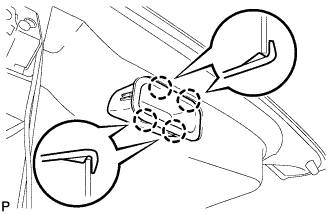
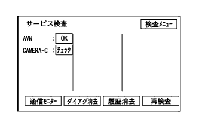

|
Install the television camera assembly to the back door outside garnish assembly with the 2 screws.
Television Camera Assembly Installation |
| 1. Install Television Camera Assembly |
|
Install the television camera assembly to the back door outside garnish assembly with the 2 screws.
| 2. Install Back Door Outside Garnish Assembly |
 |
Install the back door outside garnish with the 4 nuts.
Connect each connector.
| 3. Install Back Door Trim Panel Assembly |
 |
Engage the 11 clips to install the back door trim panel assembly.
Install clip (A).
| 4. Install Back Door Inside Handle |
 |
Engage the 4 claws to install the back door inside handle.
| 5. Install Back Door Side Garnish LH |
 |
Engage the clips and claws to install the back door side garnish LH.
 |
Align the guide position, and engage the 2 claws to install the package tray trim garnish hook.
 |
Engage the pin of the package tray trim garnish hook.
| 6. Install Back Door Side Garnish RH |
| 7. Install Back Door Trim Panel Assembly Upper |
 |
Engage the 4 clips and 4 claws to install the back door trim panel assembly upper.
| 8. Camera Optical Axis Adjustment |
Preparation Before Adjustment
Stop the vehicle with the steering wheel straight.
Place the adjustment target bars in the positions shown in the illustration.

 |
Start Diagnosis
 Reference
Reference |
Select "Inspection Menu" on the service inspection screen to display the diagnosis inspection menu screen.
 |
Select "Camera Inspection" on the diagnosis inspection menu screen to display the signal connection check screen.
Select "NEXT" on the signal connection check screen to display the camera optical axis adjustment (rotation adjustment mode) screen.
 |
Camera Optical Axis Adjustment (Rotation Adjustment Mode)
Press switch A or B to rotate C so that it is parallel to adjustment target bar A.
Select "Next" to display the camera optical axis adjustment (left/right/up/down position adjustment mode) screen.
 |
Camera Optical Axis Adjustment (Left/Right/Up/Down Position Adjustment Mode)
Press the left/right/up/down switches to move A left, right, up and down, and align A with C (corner) of adjustment target bar B.

Select "Next" to display the BUMPER screen.
 |
Camera Optical Axis Adjustment (Bumper Reference Line Display Position Adjustment Mode)
Press the left/right/up/down switches and switch A or B to move the bumper reference line left, right, up, down and rotate it so that the bumper reference line overlaps or touches the bumper edge line.
Select "Next" to display the confirmation screen.
 |
Confirmation Screen
Check that A (indicating 1 m from the bumper edge) and adjustment target bar A almost overlap, and that the bumper reference line almost overlaps the bumper edge line. Also, check that the expected course lines are straight (overlapping the vehicle width extension lines) when the steering is in the straight-ahead position.
When "NEXT" is selected, the screen changes to the steering angle adjustment screen and the camera optical axis adjustment value is stored.
 |
Steering Angle Adjustment
Check that the steering wheel is in the position in which the vehicle travels straight ahead (as a guide, nearly straight within ± 5 degrees), and select "Store Steering Angle Neutral Point".
After storing the steering angle neutral point, turn the steering wheel fully to the left, then fully to the right, and select "Store Maximum Steering Angle"; the screen changes to the diagnosis inspection menu screen and the steering angle adjustment value is stored.
When "Complete" is selected, a confirmation beep is output from the driver side speaker and the screen changes to the diagnosis inspection menu screen.
Diagnosis Cancellation
ReferenceSteering Angle Adjustment Check
On the intelligent parking assist screen, check that the expected course lines move in conjunction with the steering wheel until it is turned fully to the left and right.